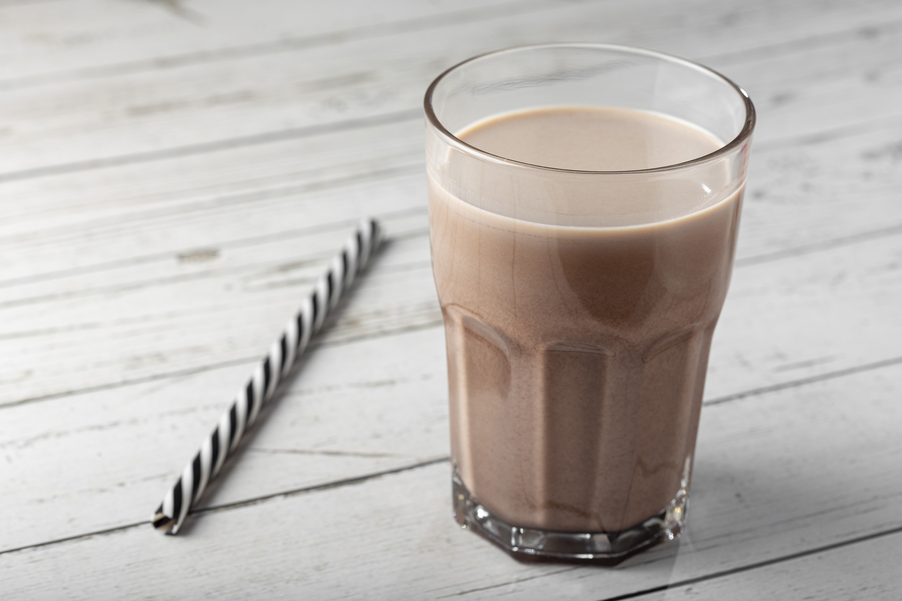

Chocolate Milk

Description
Chocolate Milk, made in the 1800's, is a classic drink that can never
go wrong. Also a staple in public schools, this drink is very popular
among children, though adults like myself don't mind an occasional
glass of choco milk.
Ingredients
Steps
- Start by pouring your glass of milk
- Add around 2-4 tablespoons of chocolate syrup, depending on the size of your glass
- Take your spoon and mix until the syrup is fully disolved in the milk
- Add a straw and drink up